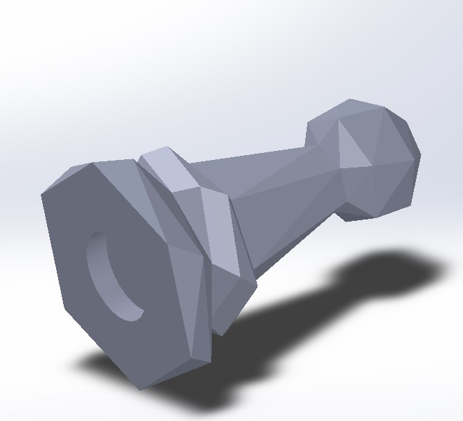
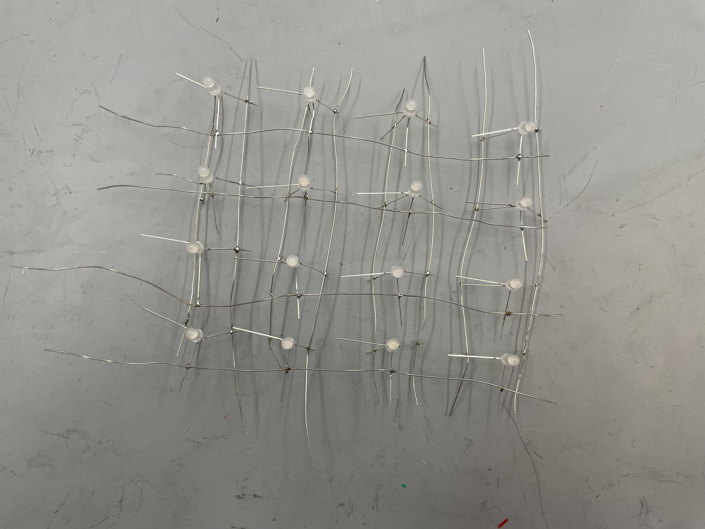
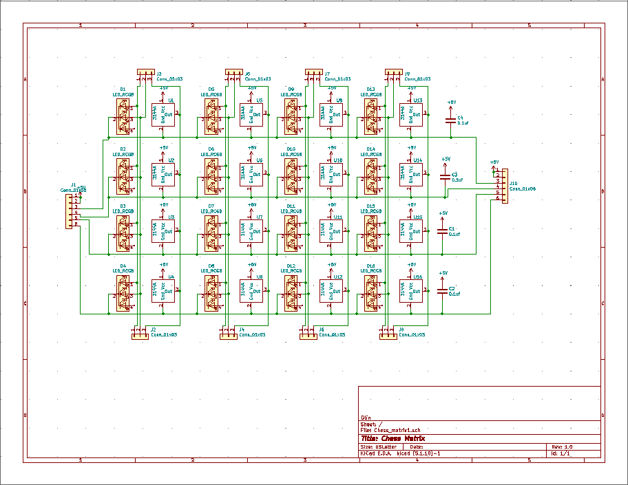
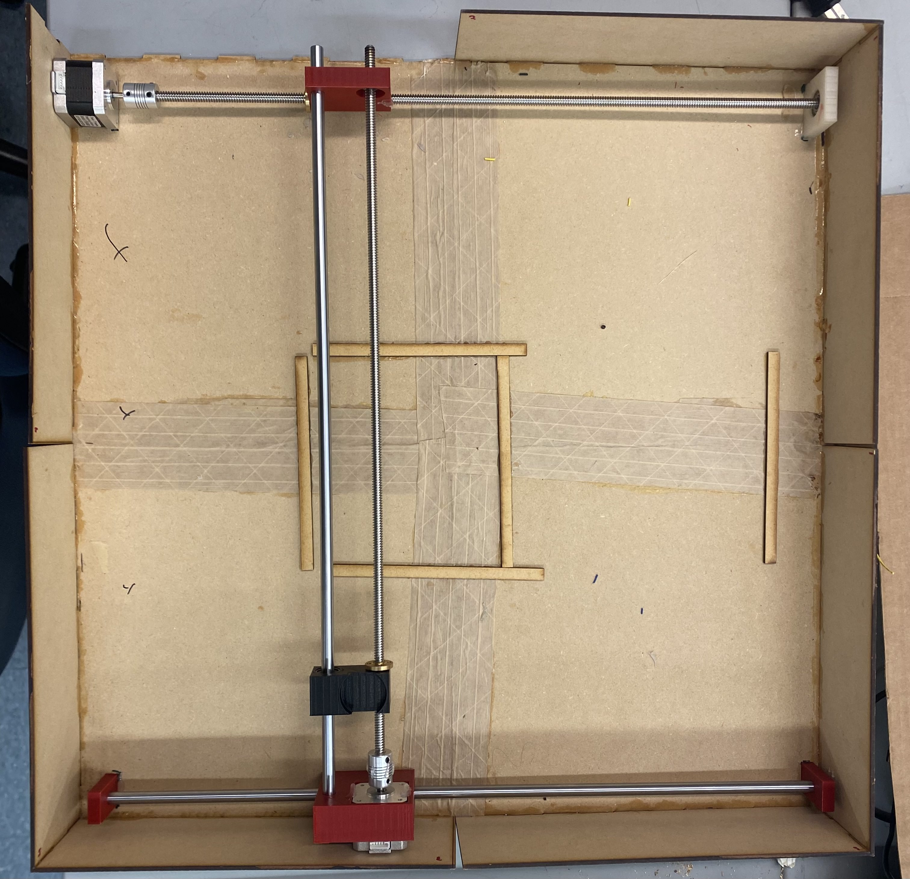
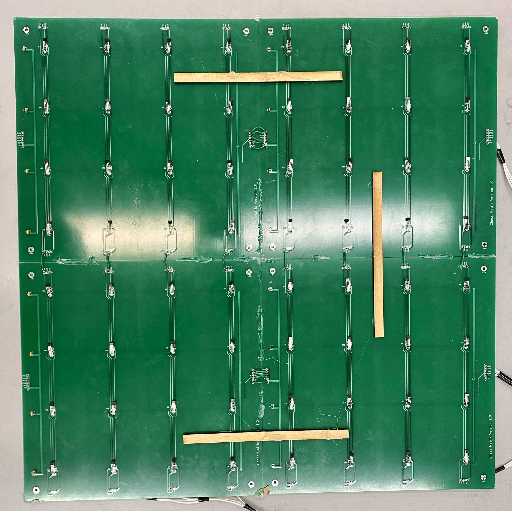

In this sprint, we decided on the chess board idea before choosing what specific features we wanted it to have. We knew that the board’s purpose was to help the user practice chess without needing another person while preserving the feel of a real-life game. We also knew that we wanted to have pieces move on their own to create the feel of an invisible opponent playing against the user.
We decided on our chess pieces during this sprint and used a design from Thingiverse and further iterated on them.

We built an independent, simple LED matrix to try to control the lights. The goal of Sprint 1 was to create a 8 by 4 Individually addressable LED matrix and we began by creating a 2 by 2 matrix LED matrix as seen below. Our larger 4 x 4 LED matrix was the second iteration. We also began exploring how we would write the code to accomplish our technical goals.
A 2x2 green LED matrix used to test how to make LEDs addressable

A 4x4 RGB LED matrix used to test addressability on a larger matrix.
By the end of the sprint, we were still waiting on the stepper motors to arrive so we used a small DC motor to test. The official electromagnet we wanted to use was also not available yet so we used a small electromagnet unneeded by another team to test the attraction between the electromagnet and the magnet in the piece. As seen in our test video below, we were able to turn on the electromagnet and move the test piece in one-dimension.
1-Axis Movement
Sprint Two
November 8th,2021 - November 11th,2021
In this sprint, we finished the first draft of the box design that would hold the gantry system with other relevant components in the board and went through multiple iterations for the final 3D-printed mounts that would hold the electromagnet and stepper motors in place.
A 2x2 RGB LED matrix and Hall Effect sensors.
At the beginning of this sprint, we made progress integrating the LEDs and the hall effect sensors in a 2x2 matrix. We also wanted to test how difficult it would be to individually solder all the LEDs and Hall Effect Sensors.
Through creating the 2x2 RGB LED matrix and Hall Effect sensors we determined that it would be time consuming and unreliable to make both the entire 8x8 RGB LED matrix and Hall Effect sensor grid through soldering wires to components. Therefore we decided to create a Printed Circuit Board (PCB) that would connect the LEDs and sensors.

PCB design for a 4x4 RGB LED and Hall Effect sensor matrix.
We designed a PCB with through hole mounts RGB LEDs and Hall Effect Sensors. The plan was to get 4 PCB boards with each board being a 4x4 matrix, then connect the PCBs together to form a 8x8 matrix. By the end of sprint 2 we had sent our designs to be manufactured.
Sprint Three
November 28th,2021 - December 12th,2021

Sprint 3 Box Without Surface Board
In this Sprint, we finalized our board after iterating through the wall designs and working out structural issues. One obstacle we ran into was that our board was too big to laser cut in one piece on the Laser Shop’s machine, so we had to split the bottom board into fours and sides in twos.
We built the first iteration of our gantry system during this time. Immediately an issue we ran into was that one of the stepper motors would not consistently move the rods when we tested it. Through significant trial and error, we figured out that lowering the acceleration of the motors improved consistency. We also had to cut down the threaded rods because they were too long for the board.
The hall sensor matrix was built during this sprint, which can be seen below:

Hall Effect Sensor Matrix
After receiving the PCB boards, we found multiple design and construction errors that resulted in the LEDs being unable to function. We had planned to have LEDs under each square that would then light up according to moves a player made (for example, once a player picked up a piece, all possible squares that piece could be moved to would light up green until the player put the piece back down) in order to allow a beginner player to become familiar with the behavior of pieces. However, as the sprint progressed, issues that arose with practically setting up 64 LEDs to perform this task proved to be numerous so this feature was dropped from our design plan
We were able to get the the player move-detecting sensors working such that when a piece is moved the correct translated chess move is given. The axis that directly controlled the electromagnet’s movement worked very well from the beginning. But we had numerous issues with the axis that indirectly moved the electromagnet. We found that the issue was interdisciplinary and involved mechanical, software, and electrical at times.
Getting the motors to move how we wanted has been the biggest obstacle for this project. We had multiple issues with seemingly faulty drivers, scares when we thought we had caused the motors and CNC shield to break during testing. Sometimes we just needed to give them a “reset” of sorts and they worked again, and other times our equipment had really broken. Finding ways to overcome these obstacles and get new equipment in a short time on a low budget made this sprint quite an arduous journey for all members on the team.